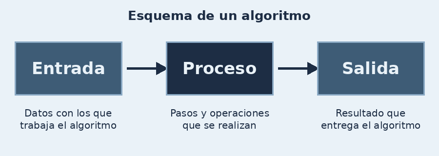

Definición
Un algoritmo es un conjunto finito de pasos ordenados y precisos que sirven para resolver un problema o realizar una tarea, a partir de unos datos de entrada que producen un resultado de salida.
Características de un algoritmo
- Finito: tiene un número limitado de pasos, es decir, siempre termina.
- Preciso: cada paso indica claramente lo que se debe hacer.
- Definido: si se repite con los mismos datos, se obtiene el mismo resultado.
- Entradas: recibe uno o más datos con los que trabaja.
- Salidas: entrega uno o más resultados.
Fases para resolver un problema
- Análisis del problema: entender qué se pide, qué datos hay y qué resultado se espera.
- Diseño del algoritmo: escribir los pasos de la solución en pseudocódigo o en un diagrama de flujo.
- Codificación: pasar el algoritmo a un lenguaje de programación.
- Prueba y depuración: ejecutar el programa y corregir los errores.
- Documentación: explicar cómo funciona el programa.
- Mantenimiento: hacer cambios o mejoras cuando sea necesario.

Lugar donde aprendí esto (FIEI-UNFV)
Dirección: Iquique 127, Lima. Abrir en Google Maps (si el mapa no carga, revisa tu conexión a internet).